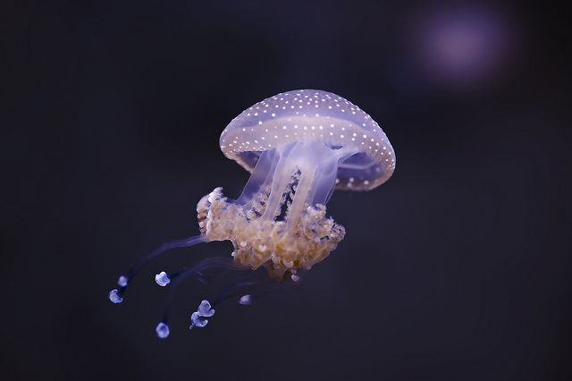
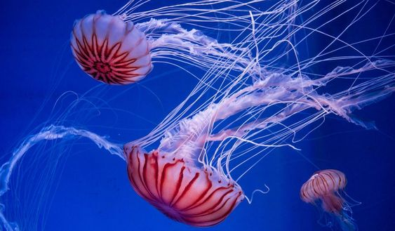

Jellyfish: Graceful Marine Creatures ! | |||
|
Jellyfish, also known as jellies or sea jellies, are fascinating marine creatures belonging to the phylum Cnidaria. They are characterized by their gelatinous, translucent bodies and their often graceful and drifting movements in the water. Anatomy and Structure: Jellyfish have a simple body structure consisting of a bell-shaped, umbrella-like body called the medusa and trailing tentacles. The bell is composed of a gelatinous substance that primarily consists of water, and it provides buoyancy that allows the jellyfish to float in the water. |
|||
|
 Types and Species: There are many different species of jellyfish, each with unique characteristics and adaptations. Some well-known species include the moon jellyfish, box jellyfish, lion's mane jellyfish, and Portuguese man-of-war. Tentacles and Stinging Cells: Hanging from the underside of the bell are numerous tentacles, which are armed with specialized stinging cells called cnidocytes. These cells contain tiny, harpoon-like structures called nematocysts that inject venom into prey or potential threats. The venom is used for capturing prey and defense.  Habitats: Jellyfish can be found in oceans around the world, from shallow coastal waters to the deep sea. They are highly adaptable and can thrive in various environments, including warm and cold waters. Jellyfish are captivating creatures that play a role in marine ecosystems and contribute to the intricate balance of ocean life. Their unique adaptations and behaviors continue to intrigue scientists and researchers as they study the mysteries of the underwater world. |
|||